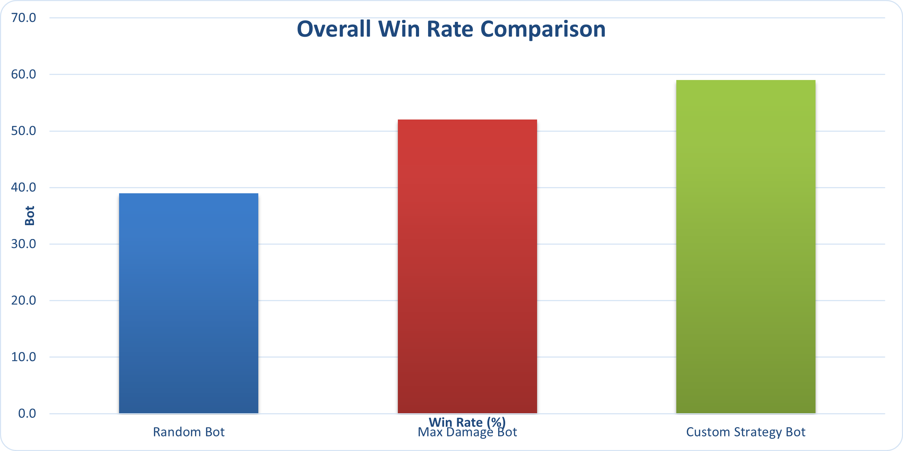
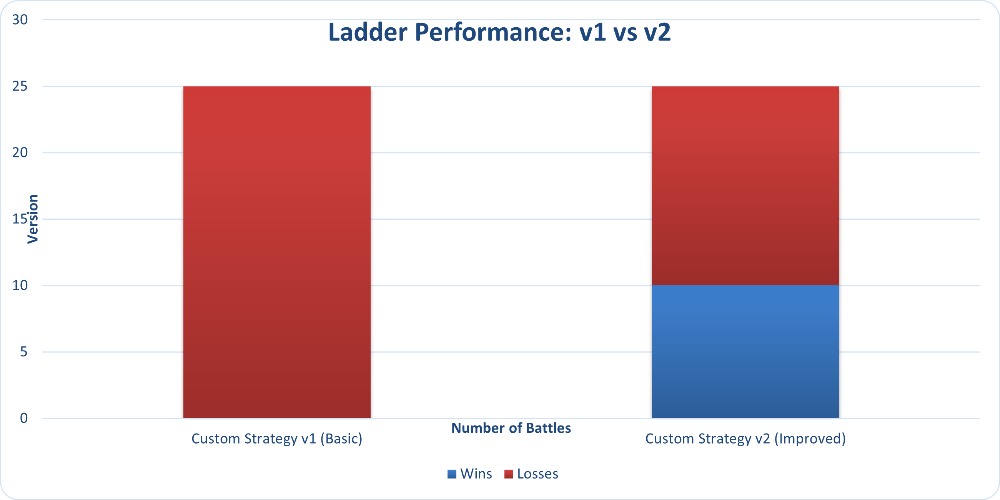

Machine Learning Pokemon Battle Bot
A personal project where I'm trying to teach a computer to play competitive Pokemon battles.
About This Project
So I've been a Pokemon fan my whole life, and I've always been fascinated by how deep the competitive battling scene is. This project is basically me combining that love for Pokemon with my interest in machine learning and AI. The idea is to start simple with some basic bots that follow rules I code manually, then eventually build up to a machine learning model that can actually learn from playing thousands of battles.
Right now I'm working with Pokemon Showdown, which is this online battle simulator where you can play Gen 8 Random Battles. The format is perfect for this because both players get random teams of 6 Pokemon, so it really tests how well your bot can make decisions on the fly rather than just memorizing optimal teams.
The tech stack I'm using includes Python for everything, the poke-env library which makes it way easier to interface with Pokemon Showdown, and eventually I want to implement some reinforcement learning algorithms such as Q Learning or Deep Q Networks.
The Three Bots
I built three different bots to test out different strategies and see what actually works. Each one uses a totally different approach to making decisions in battle.
1. Random Bot
Strategy: Just picks whatever move randomly
This is basically my control group. It literally just picks a random move from whatever's available each turn. No thinking, no strategy, just pure randomness. I needed this as a baseline to see if my other bots are actually doing anything smart or if they're just getting lucky. If my fancy bots can't beat a random number generator, then I know something's really wrong with my code.
2. Max Damage Bot
Strategy: Always go for the biggest number
This one's pretty straightforward. Every turn, it looks at all the moves it can use and just picks whichever one has the highest base power. So if it has Earthquake (base power 100) and Tackle (base power 40), it's always going with Earthquake. The interesting thing is that this bot completely ignores type effectiveness. It might use a Water move against a Water type even though that does basically nothing. But despite being super simple, it actually performs surprisingly well against the random bot, which shows that having any kind of consistent strategy is better than nothing.
3. Custom Strategy Bot
Strategy: Actually tries to play smart
This is where things get interesting. I built this bot to use a priority system where different strategic factors get weighted and combined to make decisions. Here's what it thinks about:
- Type effectiveness: This gets the highest priority. If it can hit something super effective (using Electric against Water, for example), it really wants to do that because super effective moves deal 2x damage.
- STAB bonus: STAB stands for Same Type Attack Bonus. When a Pokemon uses a move that matches its own type, it gets a 1.5x damage boost. So a Water type Pokemon using Water Gun does more damage than a Grass type using the same move.
- Dynamax timing: In Gen 8, you can Dynamax once per battle to make your Pokemon giant and boost its HP and move power. The bot tries to use this strategically when both Pokemon are relatively healthy so it can actually swing the momentum of the battle.
- Switching decisions: If the bot's current Pokemon is taking super effective damage or can't hit the opponent effectively, it'll switch to something with a better type matchup instead of just staying in and dying.
- Setup moves: Sometimes it's worth using a turn to boost your stats (using Swords Dance to double your attack, for example) instead of attacking immediately. The bot recognizes when it's safe to do this, such as when the opponent can't hit it very hard.
Performance: Gets about 59% win rate against the other bots, which is pretty solid. Against actual human players on the ladder though, it sits around 40% win rate, which honestly isn't terrible for a rule based bot.
Performance Analysis
Bot vs Bot Tournament Results
To get some actual data, I ran a tournament where each bot fought 50 battles against each of the other bots. So every bot played 100 total battles.
What does "overall win rate" mean. Each bot played 100 battles total. That's 50 battles against each of the other two bots. The overall win rate is just how many of those 100 battles they won. For example, Random Bot beat Max Damage 22 times and beat Custom Strategy 17 times, so 22 + 17 = 39 wins out of 100 battles total.
- Random Bot: Won 39 out of 100 battles.
- Max Damage Bot: Won 52 out of 100 battles.
- Custom Strategy Bot: Won 59 out of 100 battles.
Testing Against Real Human Players
Okay so beating other bots is one thing, but I wanted to see how the Custom Strategy Bot would do against actual human players. So I took it onto the Pokemon Showdown ladder where it plays against random people online.
Version 1: The First Attempt
The bot went 0 wins and 25 losses. It didn't win a single game. Looking back at the battle logs, I found some problems. The bot never used Dynamax at all, even though that's a huge mechanic in Gen 8. It would stay in bad matchups instead of switching out. And it never used setup moves, so it was missing opportunities to snowball advantages.
Improvements
I went back and made improvements based on what I learned from those 25 losses.
Then I ran another 25 battles and it went 10 wins and 15 losses. That's a 40% win rate. Going from 0% to 40% is a significant improvement. It's still losing more than it wins, but for a bot that's just following hardcoded rules without any learning, the results are acceptable.
What I Changed Specifically:
- Dynamax timing: Now it will Dynamax when the opponent has > 60% HP and the bot has > 40% HP. This ensures we're not wasting it on a Pokemon that's about to faint, and we're using it when it can actually turn the tide of battle.
- Setup move usage: The bot now recognizes when the opponent's attacks aren't doing much damage (resisted hits) and will take the opportunity to use setup moves to boost stats.
- Better switching: I made the penalty for staying in when your moves are not very effective way higher. So now if it's doing < 0.5x damage, it's much more likely to switch out to something better.
- Offensive pressure: When the opponent is at high HP, the bot prioritizes hitting hard rather than playing safe. This prevents it from getting out pressured early in the battle.
The Machine Learning Plan
So here's where I want to take this project. The rule based bots are cool and all, but the real goal is to build a bot that can actually learn and improve on its own through machine learning. Here's how I'm planning to tackle it:
Phase 1: Data Collection (Where I'm At Right Now)
Right now I'm in full data gathering mode. Machine learning requires a ton of training data, so I'm running thousands of battles and logging everything that happens. Every move choice, HP values, damage calculations, type matchups, when Pokemon faint, who wins, all of it.
I'm collecting data from a few sources. The bots play each other constantly to generate data. I'm also running the Custom Strategy Bot on the ladder to get real games against humans. Eventually I want to scrape some replays from top ranked players on Showdown to see what expert level decision making patterns emerge.
Phase 2: Feature Engineering
This is the tricky part. I need to take all that battle data and convert it into numbers that a neural network can work with. Pokemon types, moves, abilities, stats, all of that needs to be encoded somehow.
I'm thinking of representing the battle state as a big vector of numbers. Things such as current HP percentages, stat boosts, what types are on the field, what moves are available, type matchups, etc. I'll also need to encode team preview info and what Pokemon are still alive in the back.
Phase 3: Model Development
I'm planning to use reinforcement learning, probably starting with something such as Deep Q Networks (DQN). The basic idea is that the model gets a reward when it wins battles and learns which actions in which states lead to higher rewards over time.
I might start with some supervised learning first, where I train a model to imitate what good human players do. But the real power comes from reinforcement learning through self play, where the bot plays against itself thousands of times and gradually discovers strategies.
Phase 4: Testing and Iteration
Once I have a trained model, I'll test it against my rule based bots first to make sure it's at least better than those. If it can't beat the Custom Strategy Bot consistently, then something went wrong in training.
After that, it's back to the ladder for real world testing. I'll track the win rate over time and see if the model can break 50% against human players.
The Goal: Eventually I want a bot that doesn't just follow rules I programmed, but actually understands Pokemon battling at a deep level. Something that can predict opponent moves, recognize win conditions, and hold its own against really good human players.